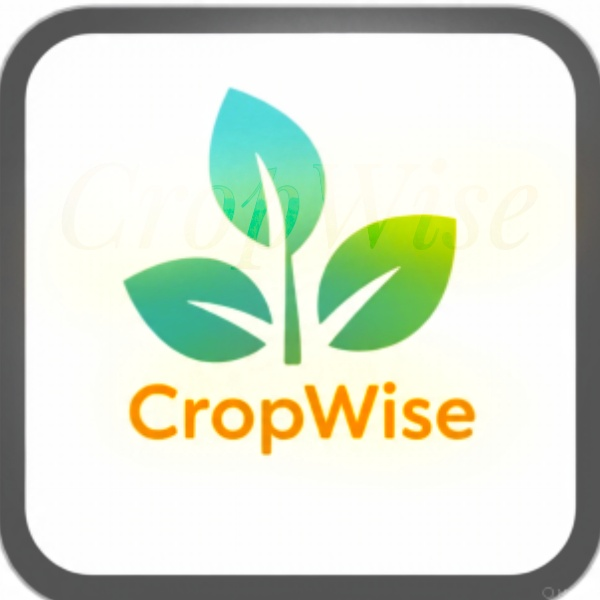
Introduction
CropWise is a smart farming assistant designed to support farmers with intelligent planning, personalized crop recommendations, weather updates, and productivity tools. With a simple and user-friendly interface, the app provides tailored insights based on current weather conditions, helping farmers make informed decisions for planting, watering, and harvesting. By integrating Ai-driven suggestions and local calendar reminders, CropWise ensures that no important farming task is missed
The app includes a smart dashboard, crop recommendation system, personal calendar with reminders, and a chatBot for quick farming support. Built with Flutter and Firebase, CropWise leverages modern technology while remaining lightweight with a freeplan to use. Whether you're planning your next harvest or tracking daily tasks, CropWise empowers farmers with the tools they need to grow better, smarter, and sustainability.
Features
Cropwise comes packed with essential tools tailored for farmers. Each feature is designed to solve real farming challenges from unpredictable weather to managing daily tasks. The app combines somplicity with smart technology, helping users stay organized, informed, and productive throughout the farming season
The weather and smart recommmendation feature provides real-time weather updates alongside
Ai-driven farming advice
Based on the user's location, the app suggests the best times to plant, water, or harvest crops. These
smart tips help farmers make timely
decisions, reduce risks caused by weather changes and improve crop yield with minimal guesswork.
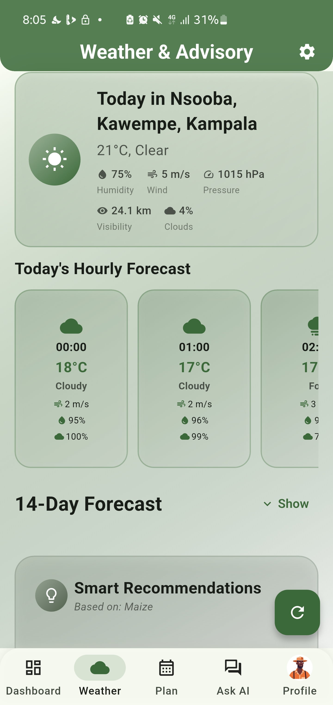
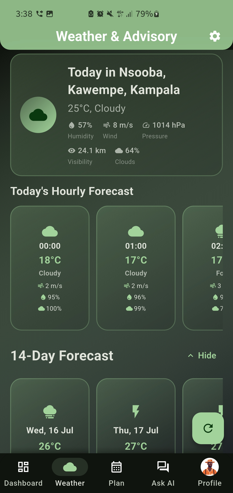
The personal calendar with reminders keeps farmers organized and on track
Users can set reminders for important tasks like planting, watering, and harvesting. The calendar syncs
with the weather feature to provide
timely alerts, ensuring that no critical farming activity is missed.
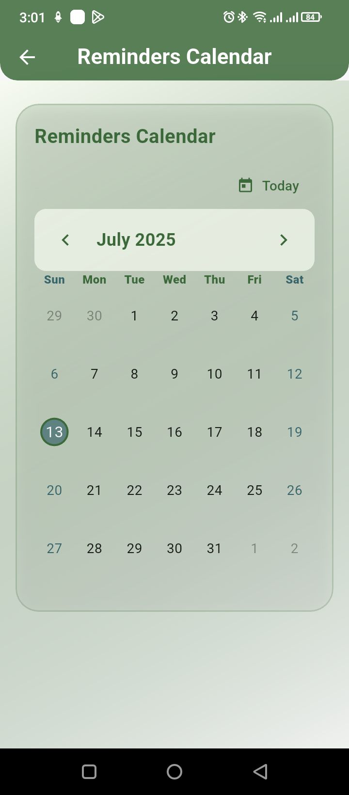
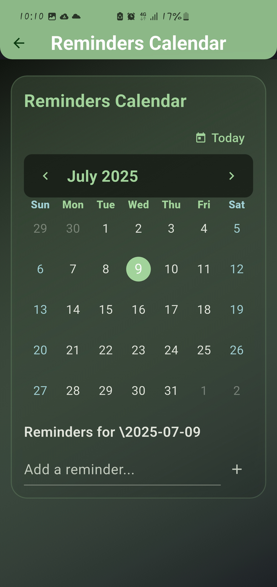
The smart dashboard provides a comprehensive overview of farming activities
It displays weather forecasts, upcoming tasks, and crop recommendations in one place. This helps farmers
quickly assess their daily plans and
adjust as needed based on changing conditions.
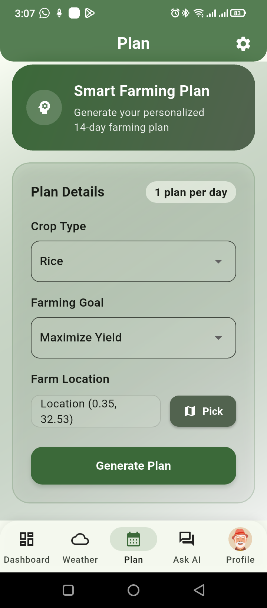
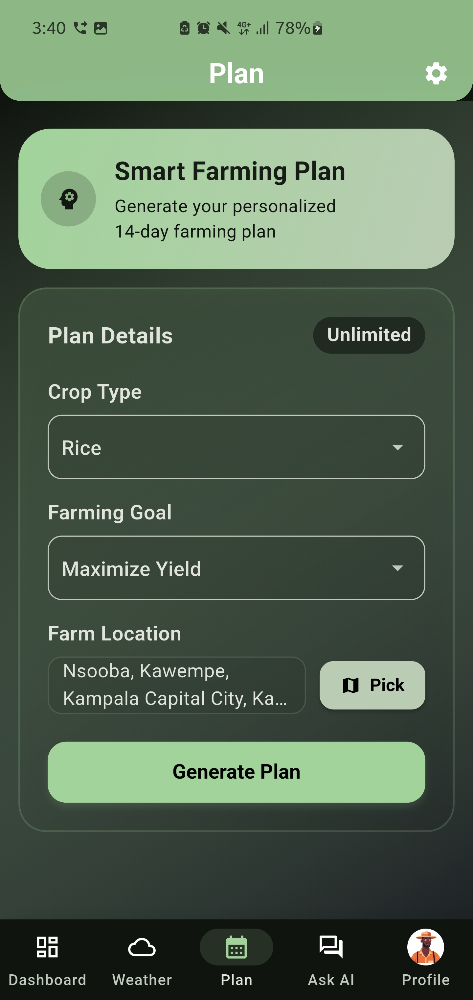
The chatbot feature offers quick access to farming support
Users can ask questions and get instant answers from the app's AI assistant. This feature is designed to
provide immediate help with common
farming issues, making it easier for farmers to find solutions on the go.
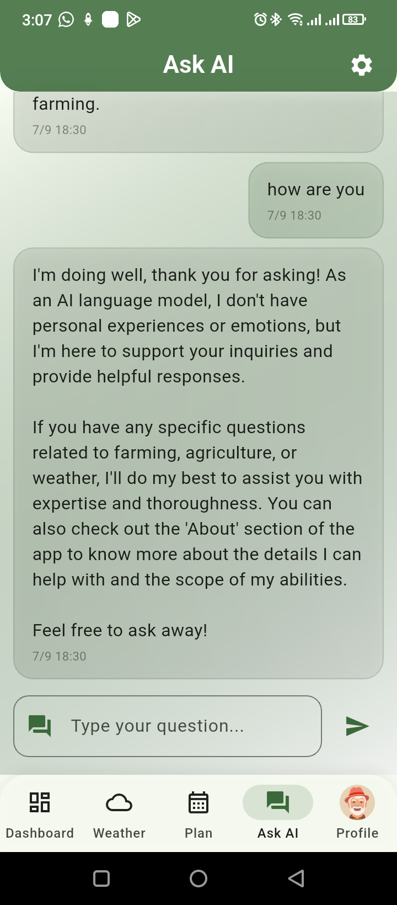
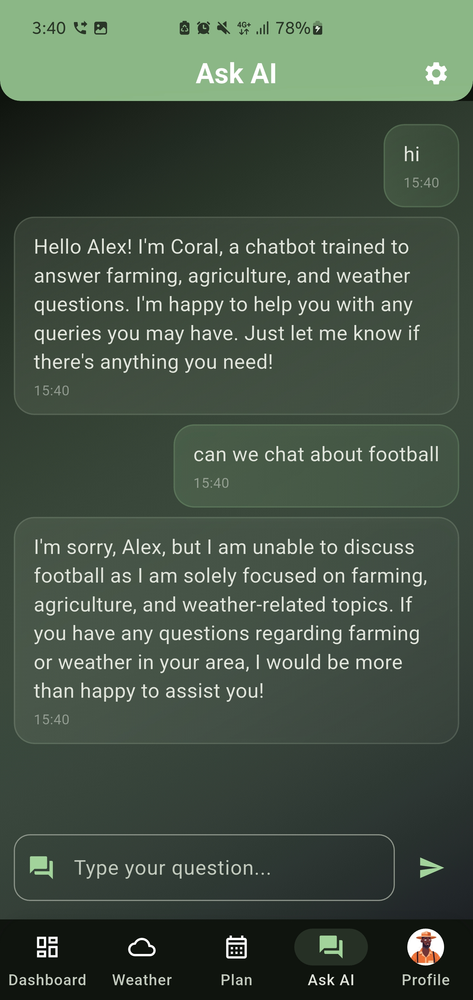
The profile management feature allows users to customize their farming experience
Farmers can set preferences, track their progress, and manage their farming activities. This
personalization helps the app provide more relevant
recommendations and reminders based on individual farming practices.
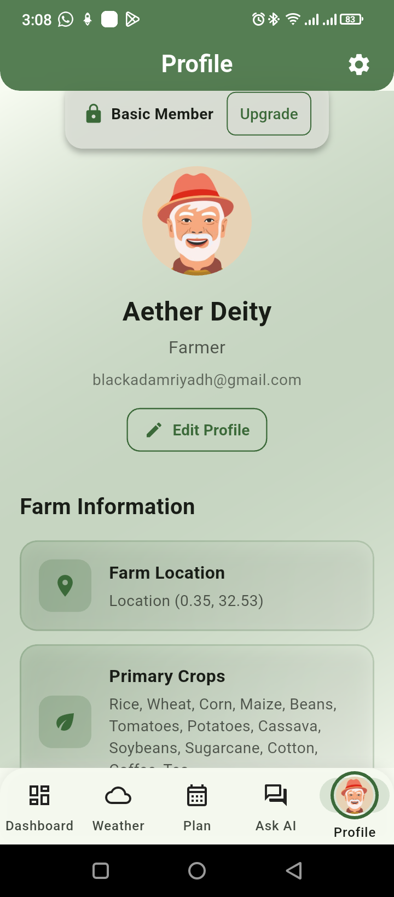
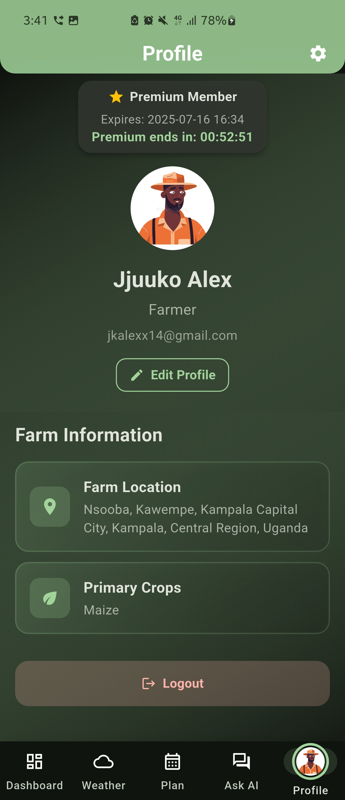
Technology Stack
Flutter Framework
Flutter is an open-source ui framework developed by Google that allows developers to build cross-platform
applications
using sigle codebase.
CropWise was developed using flutter to ensure a smooth and consistent
experience accross both
Android and iOS devices. Its fast development cycle, customizable widgets, and strong community support
made it an ideal choice for
building a modern, responsive, and visually appealing farming app.
Firebase Services used
Firebase is a Backend-as-a-Service (Baas) platform by Google that provides powerful tools for app development. CropWise uses several Firebase services to handle user authentication, data storage, and notifications. Firebase authentication manages secure sign-ins, Firestore is used to store user data such as plans and reminders, and Firebase cloud messaging enables local notification. These services help keep the app lightweight, reliable, and scalable without the need to manage a custom backend.
APIs & Packages
CropWise integrates various APIs and packages to enhance functionality. The app uses weather APIs to provide real-time weather updates, ensuring farmers receive accurate information for their planning. Additionally, it leverages packages for local notifications, enabling timely reminders for farming tasks. These integrations help create a seamless user experience while keeping the app responsive and efficient.
User Interface Design
The user interface (UI) of CropWise is designed for simplicity, clarity, and ease of use. Each screen focuses on a single function-like weather updates, reminders, or chat support-so users can quickly accesss what they need. The app usesa button navigation bar for fast movementbetween key pages such as Dashboard, Profile, and Chatbot. The design is responsive, ensuring that it works well on both Android and iOS devices.
Navigation Structure
The navigation structure of CropWise is intuitive, allowing users to easily switch between different sections of the app. The main navigation bar includes buttons for the Dashboard, Weather, Calendar, Chatbot, and Profile. Each section is designed to provide quick access to essential features, ensuring that farmers can efficiently manage their tasks and stay informed about their crops.
Page layouts
Each page in CropWise is carefully laid out to maximize usability. The Dashboard provides an overview of weather conditions, upcoming tasks, and crop recommendations. The Weather page displays real-time updates and forecasts, while the Calendar page allows users to set reminders for important farming activities. The Chatbot page offers quick access to AI-driven support, and the Profile page enables users to customize their settings and preferences. With light theme and dark theme options, the app ensures a comfortable viewing experience in various lighting conditions.
Application Functionality
CropWise is designed to be user-friendly and efficient, providing farmers with the tools they need to manage their crops effectively. The app's functionality includes real-time weather updates, personalized crop recommendations, a smart calendar with reminders, and a chatbot for quick support. Each feature is integrated seamlessly to ensure that farmers can access all necessary information in one place, making it easier to plan and execute farming tasks.
Location and Weather Integration
The app uses the device's location to provide accurate weather updates tailored to the user's farming area. This integration allows farmers to receive real-time weather forecasts, helping them make informed decisions about planting, watering, and harvesting crops. The weather feature is designed to be reliable and easy to use, ensuring that farmers can quickly access the information they need.
AI-Based Crop Planning
CropWise utilizes AI algorithms to analyze weather patterns and provide personalized crop recommendations. This feature helps farmers choose the best crops to plant based on current and forecasted weather conditions, maximizing yield and minimizing risks. The AI-driven insights are designed to be actionable, allowing farmers to make data-driven decisions for their farming practices.
Notification system
The app includes a notification system that alerts users about important farming tasks and weather changes. Notifications are sent for upcoming reminders, weather updates, and AI-driven crop suggestions, ensuring that farmers stay informed and on track with their farming activities. This feature is designed to be non-intrusive, allowing users to customize their notification preferences based on their needs.
Chatbot Communication flow
CropWise features a chatbot that provides quick access to farming support. Users can ask questions and receive instant answers from the app's AI assistant. The chatbot is designed to handle common farming queries, making it easier for farmers to find solutions on the go. This feature enhances user engagement and provides a convenient way to access information without navigating through multiple screens.
DataStorage & Management
Firebase Authentication
CropWise uses Firebase Authentication to manage user accounts securely. This service allows users to sign in with their email and password, ensuring that their data is protected. Firebase Authentication also supports social media logins, providing flexibility for users to access the app using their preferred authentication method.
Firestore Database
The app utilizes Firestore, a NoSQL cloud database, to store user data such as plans, reminders, and preferences. Firestore's real-time synchronization ensures that users can access their data from any device, providing a seamless experience across platforms. The database is designed to be scalable and efficient, allowing the app to handle large amounts of data without compromising performance.
Security & Permissions
User Data Production
CropWise prioritizes user data protection by implementing robust security measures. All user data is encrypted both in transit and at rest, ensuring that sensitive information remains secure. The app follows best practices for data privacy, including obtaining user consent for data collection and providing clear information about how data is used.
App Permissions
The app requires specific permissions to function effectively, such as access to the device's location for weather updates and notifications. Users are informed about these permissions during the onboarding process, and they can manage their preferences in the app settings. CropWise ensures that all permissions are necessary for the app's core functionality, maintaining a balance between user convenience and security.